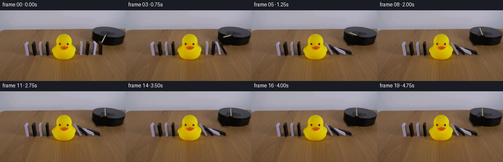
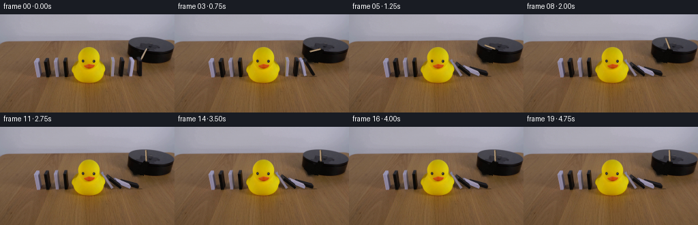
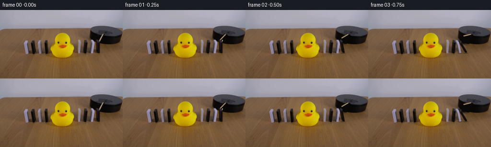

CODING AGENTS AS PIXEL WORLD MODELS
traex/GPT-6.1-Sol · 0056
点击播放 · 原生 RGB 像素
逐轮保存的候选
回放视频、检查图与代码变化。
每份候选均可单独播放。实际图片检查记录在下方工具轨迹中。
候选 01播放与检查图
点击播放 · 原生 RGB 像素

展开代码变化
--- 上一保存版本
+++ 本次保存版本
@@ -0,0 +1,232 @@
+from pathlib import Path
+import math
+import cv2
+import numpy as np
+from PIL import Image
+import artifact_io
+
+ROOT=Path(__file__).resolve().parent
+S=4
+W,H=256,144
+SOURCE=np.array(Image.open(ROOT/'first_frame.png').convert('RGB'))
+rng=np.random.default_rng(43)
+
+def polygon_mask(points, scale=1):
+ a=np.zeros((H*scale,W*scale),np.uint8)
+ cv2.fillPoly(a,[np.round(np.array(points)*scale).astype(np.int32)],255)
+ return a
+
+# Positions, silhouettes and surface coordinates are measured from the RGB input.
+blocks=[
+ dict(base=(200.0,86.7),h=24.5,lean=.00,t=4.0,w=(3.2,4.0),white=False,
+ outline=[(200,61.7),(205,61.7),(209,67),(208,88),(207,91),(202.5,91),(200,87)],
+ src=[(200,87),(204,87),(207.5,91),(203,91),(200,62),(204,62),(208,67),(203.5,67)]),
+ dict(base=(187.4,86.6),h=24.0,lean=.10,t=3.7,w=(3.0,4.0),white=True,
+ outline=[(189.2,62),(194,62),(197.5,68),(197,75),(195.8,81),(194.5,87),(194.4,91),(189,91),(186.5,86),(187.8,78),(188.5,69)],
+ src=[(187.4,86.6),(191.1,86.6),(194.1,90.6),(190.4,90.6),(189.8,62.6),(193.5,62.6),(196.5,66.6),(192.8,66.6)]),
+ dict(base=(173.6,86.5),h=24.0,lean=.075,t=4.0,w=(3.0,4.5),white=False,
+ outline=[(175,62.2),(180.3,62.2),(183.2,68),(182.5,77),(181.1,86),(180,91.4),(175,91.5),(172.7,87),(173,81),(174.5,68)],
+ src=[(173.6,86.5),(177.6,86.5),(180.6,91),(176.6,91),(175.4,62.5),(179.4,62.5),(182.4,67),(178.4,67)]),
+ dict(base=(160.6,86.4),h=24.0,lean=.085,t=3.5,w=(3.0,4.5),white=True,
+ outline=[(162,62),(166.5,62),(168.7,67),(168.5,75),(167.5,83),(167.5,91),(162,91.5),(161.7,87),(162,77),(161.4,70),(162,66)],
+ src=[(160.6,86.4),(164.1,86.4),(167.1,90.9),(163.6,90.9),(162.6,62.4),(166.1,62.4),(169.1,66.9),(165.6,66.9)])
+]
+for i,b in enumerate(blocks):
+ m=polygon_mask(b['outline'])
+ b['mask']=cv2.dilate(m,np.ones((3,3),np.uint8))
+ # Original contact shadows spread across the tabletop toward the camera-left.
+ x,y=b['base']
+ sh=polygon_mask([(x-14,y-9),(x+6,y-4),(x+9,y+6),(x-14,y+5)])
+ sh[:73]=0
+ # Do not erase the rubber duck or its contact shadow.
+ sh[:,:160]=0
+ b['erase']=np.maximum(b['mask'],sh)
+
+rod_old=polygon_mask([(212.6,49),(216.5,49.7),(216.7,52),(209,67.3),(205,66.3),(205.8,62.8)])
+rod_old=cv2.dilate(rod_old,np.ones((3,3),np.uint8))
+allmask=rod_old.copy()
+for b in blocks:allmask=np.maximum(allmask,b['erase'])
+# Classical, non-learned local inpainting supplies the tabletop under the blocks.
+plate=cv2.inpaint(SOURCE,allmask,5,cv2.INPAINT_TELEA)
+# Restore the black platform behind the stick and the upper end of the first tile.
+yy,xx=np.mgrid[:H,:W]
+bottom=53+19*np.sqrt(np.maximum(0,1-((xx-220)/34)**2))
+inside=(xx>=188)&(xx<253)&(yy>=46)&(yy<=bottom)&(allmask>0)
+front_noise=rng.normal(0,.75,(H,W,1))
+black=np.broadcast_to(np.array([10.,9.,7.]),(H,W,3))+front_noise
+plate[inside]=np.clip(black[inside],0,255).astype(np.uint8)
+# The stick crosses the top rim near its fixed spindle, where the platform is gray.
+for y in range(47,56):
+ for x in range(205,219):
+ if rod_old[y,x] and y < 50+(x-210)*.35:
+ vals=SOURCE[y,max(193,x-13):max(198,x-8)]
+ plate[y,x]=np.median(vals,axis=0)
+# Restore unaffected silhouette to ensure exact, stable contours.
+plate[allmask==0]=SOURCE[allmask==0]
+Image.fromarray(plate).save(ROOT/'.tmp/clean_plate.png')
+SRC_HI=cv2.resize(SOURCE,(W*S,H*S),interpolation=cv2.INTER_CUBIC).astype(np.float32)
+
+# A constrained angular cascade. A tilted neighbor is a physical support; the duck
+# blocks the final tile, so the dominoes beyond the duck do not receive an impulse.
+dt=1/800
+steps=int(5/dt)+1
+theta=np.zeros((steps,4))
+omega=np.zeros(4)
+active=np.zeros(4,bool)
+gaps=np.array([8.4,10.0,9.5])
+for k in range(1,steps):
+ t=k*dt
+ q=theta[k-1].copy()
+ if t>=.39 and not active[0]:
+ active[0]=True;omega[0]=1.7
+ for i in range(3,-1,-1):
+ if not active[i]:continue
+ omega[i]+=dt*(35*math.sin(q[i])-.65*omega[i])
+ proposed=q[i]+omega[i]*dt
+ if i==3:
+ limit=math.radians(34)
+ support_speed=0
+ else:
+ beta=q[i+1]
+ limit=beta+math.asin(min(.999,gaps[i]*math.cos(beta)/blocks[i]['h']))
+ support_speed=omega[i+1]
+ if proposed>=limit:
+ if i<3 and not active[i+1]:
+ active[i+1]=True;omega[i+1]=max(1.05,omega[i]*.65)
+ proposed=limit
+ omega[i]=min(omega[i],max(0,support_speed*.94))
+ q[i]=proposed
+ theta[k]=q
+np.savetxt(ROOT/'.tmp/angles.txt',np.c_[np.arange(steps)[::200]*dt,np.degrees(theta[::200])],fmt='%.3f')
+
+
+def vertices(b,a):
+ sn,cs=math.sin(a),math.cos(a)
+ x,y=b['base']; th=b['t']; wx,wy=b['w']; ht=b['h']; lean=b['lean']
+ # Fixed oblique camera projection, including the tiny longitudinal perspective.
+ thick=np.array([th*(cs+lean*sn),th*(.025*cs-sn)])
+ vert=np.array([ht*(-sn+lean*cs),ht*(-.025*sn-cs)])
+ p=np.array([x,y],float); dep=np.array([wx,wy])
+ return np.array([p,p+thick,p+thick+dep,p+dep,p+vert,p+thick+vert,p+thick+dep+vert,p+dep+vert])
+
+def flat_polygon(canvas,points,color,alpha=1):
+ mask=polygon_mask(points,S).astype(float)/255*alpha
+ canvas[:]=canvas*(1-mask[:,:,None])+np.array(color)[None,None,:]*mask[:,:,None]
+
+def textured_face(canvas,b,verts,ids,kind,angle):
+ dst=np.array([verts[i] for i in ids],np.float32)*S
+ mask=np.zeros((H*S,W*S),np.uint8)
+ cv2.fillConvexPoly(mask,np.round(dst).astype(np.int32),255)
+ if cv2.countNonZero(mask)<2:return
+ if kind=='right':
+ val=np.array([152,144,166] if b['white'] else [32,30,33],float)
+ tex=np.broadcast_to(val,(H*S,W*S,3)).copy()
+ n=1.4*np.sin(np.arange(H*S)[:,None]*1.89+np.arange(W*S)[None,:]*.73)
+ tex+=n[:,:,None]
+ factor=.82+.26*math.sin(angle)
+ else:
+ src=np.array([b['src'][i] for i in ids],np.float32)*S
+ transform=cv2.getPerspectiveTransform(src,dst)
+ tex=cv2.warpPerspective(SRC_HI,transform,(W*S,H*S),flags=cv2.INTER_LINEAR,borderMode=cv2.BORDER_REPLICATE)
+ if kind=='front':factor=1-.08*math.sin(angle)
+ elif kind=='left':factor=1-.06*math.sin(angle)
+ else:factor=1-.18*math.sin(angle)
+ # Small rim highlights and subdued texture keep the blocks matte rather than graphic.
+ alpha=mask.astype(float)[:,:,None]/255
+ canvas[:]=canvas*(1-alpha)+np.clip(tex*factor,0,255)*alpha
+
+
+def draw_block(canvas,b,a):
+ v=vertices(b,a)
+ # The new upward-facing side appears naturally as the cuboid rotates.
+ front=[3,2,6,7];left=[0,3,7,4];right=[1,2,6,5];top=[4,5,6,7]
+ if -.65*math.cos(a)+.824*math.sin(a)>0:
+ textured_face(canvas,b,v,right,'right',a)
+ else:
+ textured_face(canvas,b,v,left,'left',a)
+ textured_face(canvas,b,v,front,'front',a)
+ textured_face(canvas,b,v,top,'top',a)
+
+
+def cast_shadows(canvas,angles):
+ shade=np.zeros((H*S,W*S),np.float32)
+ for b,a in zip(blocks,angles):
+ if a<.001:continue
+ v=vertices(b,a)
+ # Ground projection of the prism with an oblique area-light penumbra.
+ pts=[]
+ for j,p in enumerate(v):
+ z=b['t']*math.sin(a)*(j in [1,2,5,6])+b['h']*math.cos(a)*(j>=4)
+ ground=p+np.array([.10*z,.90*z])
+ ground+=np.array([-.24*z,-.12*z])
+ pts.append(ground)
+ poly=cv2.convexHull(np.round(np.array(pts)*S).astype(np.int32))
+ m=np.zeros_like(shade)
+ cv2.fillConvexPoly(m,poly,.25)
+ m=cv2.GaussianBlur(m,(0,0),1.6*S)
+ shade=1-(1-shade)*(1-m)
+ # Contact shadow immediately beneath the anchored bottom edge.
+ x,y=b['base'];cv2.ellipse(shade,(round((x+3)*S),round((y+4)*S)),(round(6*S),round(1*S)),0,0,360,.27,-1)
+ canvas*=1-shade[:,:,None]
+
+
+def rod_angle(t):
+ # Clockwise, constant-speed shaft rotation followed by a gentle motor stop.
+ if t<2.1:return math.radians(117+66*t)
+ u=min((t-2.1)/.35,1)
+ return math.radians(117+66*2.1+66*.35*(u-u*u/2))
+
+
+def draw_rod(canvas,t):
+ a=rod_angle(t);pivot=np.array([214.6,50.6]);length=16.1
+ tip=pivot+length*np.array([math.cos(a),math.sin(a)])
+ # A slim cylindrical wooden striker, attached to the existing platform.
+ # Its edge shadow is offset very slightly across the platform surface.
+ shadow=np.zeros((H*S,W*S),np.float32)
+ cv2.line(shadow,tuple(np.round((pivot+[.8,1])*S).astype(int)),tuple(np.round((tip+[.8,1])*S).astype(int)),.33,round(3*S),cv2.LINE_AA)
+ shadow=cv2.GaussianBlur(shadow,(0,0),.55*S)
+ canvas*=1-shadow[:,:,None]
+ d=tip-pivot;n=np.array([-d[1],d[0]])/length
+ flat_polygon(canvas,[pivot-n*1.15,tip-n*1.15,tip+n*1.15,pivot+n*1.15],[123,96,66])
+ flat_polygon(canvas,[pivot-n*.8,tip-n*.8,tip+n*.43,pivot+n*.43],[175,152,123])
+ # Longitudinal wood grain rather than a single flat-colored bar.
+ linepts=[tuple(np.round((pivot-n*.55)*S).astype(int)),tuple(np.round((tip-n*.55)*S).astype(int))]
+ cv2.line(canvas,linepts[0],linepts[1],(190,170,144),max(1,round(.27*S)),cv2.LINE_AA)
+ cv2.circle(canvas,tuple(np.round(tip*S).astype(int)),round(1*S),(152,126,94),-1,cv2.LINE_AA)
+ cv2.circle(canvas,tuple(np.round(pivot*S).astype(int)),round(1.05*S),(63,56,48),-1,cv2.LINE_AA)
+ cv2.circle(canvas,tuple(np.round((pivot+[-.15,-.2])*S).astype(int)),round(.48*S),(97,86,71),-1,cv2.LINE_AA)
+
+
+def render(t):
+ angles=theta[min(round(t/dt),steps-1)]
+ remove=rod_old.copy()
+ for b,a in zip(blocks,angles):
+ if a>.001:remove=np.maximum(remove,b['erase'])
+ image=SOURCE.copy();image[remove>0]=plate[remove>0]
+ # Any tile not yet reached by the impulse remains pixel-exact in place.
+ for b,a in zip(blocks,angles):
+ if a<=.001:image[b['mask']>0]=SOURCE[b['mask']>0]
+ canvas=np.repeat(np.repeat(image.astype(np.float32),S,0),S,1)
+ cast_shadows(canvas,angles)
+ # Paint back to front, retaining correct overlaps of the falling row.
+ for b,a in zip(blocks,angles):
+ if a>.001:draw_block(canvas,b,a)
+ draw_rod(canvas,t)
+ out=cv2.resize(np.clip(canvas,0,255),(W,H),interpolation=cv2.INTER_AREA).round().astype(np.uint8)
+ # The duck and the left-hand row are not moved: the duck arrests the cascade.
+ # Composite their original RGB boundary to occlude the supported final domino.
+ r,g,bl=SOURCE[:,:,0].astype(float),SOURCE[:,:,1].astype(float),SOURCE[:,:,2].astype(float)
+ duck=(r>150)&(g>94)&(bl<91)&(xx>=104)&(xx<=156)&(yy>=47)&(yy<=101)
+ duck=cv2.morphologyEx(duck.astype(np.uint8),cv2.MORPH_CLOSE,np.ones((3,3),np.uint8))
+ # Include dark eyes and the orange bill within the silhouette, not the table shadow.
+ for y in range(47,101):
+ xs=np.flatnonzero(duck[y])
+ if len(xs)>1:duck[y,xs[0]:xs[-1]+1]=1
+ out[duck>0]=SOURCE[duck>0]
+ return out
+
+frames=[SOURCE.copy()]
+for index in range(1,20):frames.append(render(index/4))
+frames=np.stack(frames).astype(np.uint8)
+artifact_io.save(frames,ROOT)
+print('Saved',frames.shape,'uint8 RGB frames.')
候选 02播放与检查图
点击播放 · 原生 RGB 像素


展开代码变化
--- 上一保存版本
+++ 本次保存版本
@@ -61,6 +61,12 @@
if rod_old[y,x] and y < 50+(x-210)*.35:
vals=SOURCE[y,max(193,x-13):max(198,x-8)]
plate[y,x]=np.median(vals,axis=0)
+# Retain fine photographic tabletop grain in the newly exposed areas. The
+# residual comes solely from the same tabletop farther down in the input.
+table_residual=SOURCE.astype(np.float32)-cv2.GaussianBlur(SOURCE.astype(np.float32),(0,0),1.4)
+table_region=(allmask>0)&(yy>bottom+2)&(xx>=160)
+sy=np.minimum(yy+30,H-1)
+plate[table_region]=np.clip(plate.astype(float)[table_region]+.7*table_residual[sy,xx][table_region],0,255).astype(np.uint8)
# Restore unaffected silhouette to ensure exact, stable contours.
plate[allmask==0]=SOURCE[allmask==0]
Image.fromarray(plate).save(ROOT/'.tmp/clean_plate.png')
@@ -84,7 +90,7 @@
omega[i]+=dt*(35*math.sin(q[i])-.65*omega[i])
proposed=q[i]+omega[i]*dt
if i==3:
- limit=math.radians(34)
+ limit=math.radians(38)
support_speed=0
else:
beta=q[i+1]
可观测工具轨迹
实际执行的命令与返回图片。
命令 1exit 0
/bin/bash -lc 'ls -la && cat prompt.txt && cat GENERATION_RULES.md'
命令 2exit 0
/bin/bash -lc "cat artifact_io.py && python - <<'PY'
from PIL import Image
import numpy as np
im=np.array(Image.open('first_frame.png')); print(im.shape)
# reduced quantization / labels
im=np.array(Image.open('first_frame.png').resize((128,72)))
for row in im:
s=''
for r,g,b in row.astype(float):
if max(r,g,b)<48:c='#'
elif max(r,g,b)<88:c='X'
elif max(r,g,b)<120:c='x'
elif r>140 and g>100 and b<80:c='Y'
elif r>1.4*g and r>1.4*b:c='r'
elif r>g*1.11 and g>b*1.12:c='w'
elif min(r,g,b)>190:c='.'
elif min(r,g,b)>150:c=','
else:c='-'
s+=c
print(s)
PY"命令 3exit 0
/bin/bash -lc "python - <<'PY'
from PIL import Image
import numpy as np
im=np.array(Image.open('first_frame.png'))
print('crop right side, x 150:256 y 32:94')
print(' '+''.join(str((x//10)%10) for x in range(150,256)))
print(' '+''.join(str(x%10) for x in range(150,256)))
for y in range(30,97):
s=''
for r,g,b in im[y,150:256].astype(float):
if max(r,g,b)<30:c='#'
elif max(r,g,b)<55:c='B'
elif max(r,g,b)<85:c='X'
elif r>180 and g>170 and b>150:c='.'
elif r>135 and g>125 and b>110 and abs(r-g)<20:c='o'
elif r>1.25*g and g>b*1.12:c='w'
elif max(r,g,b)<115:c='x'
elif r>g*1.05 and g>b*1.1:c='W'
else:c='-'
s+=c
print(f'{y:03d} '+s)
print('rgb grid stick area')
for y in range(40,69,2):
print(y, [(x,tuple(im[y,x])) for x in range(197,214,2)])
PY"命令 4exit 0
/bin/bash -lc "python - <<'PY'
import numpy as np
from PIL import Image
im=np.array(Image.open('first_frame.png'))
print('Domino crop x45:110 y59:96')
print(' '+''.join(str((x//10)%10) for x in range(45,110)));print(' '+''.join(str(x%10) for x in range(45,110)))
for y in range(59,96):
s=''
for r,g,b in im[y,45:110].astype(float):
if max(r,g,b)<28:c='#'
elif max(r,g,b)<50:c='B'
elif max(r,g,b)<75:c='X'
elif r>150 and g>120 and b<75:c='Y'
elif min(r,g,b)>145:c='.'
elif r-g<23 and min(r,g,b)>104:c='o'
elif r>1.2*g and g>b*1.15:c='w'
else:c='x'
s+=c
print(f'{y:03d} '+s)
print('White dom color rows right:')
for y in [63,64,65,70,80,89,90]:
print(y,[(x,tuple(im[y,x])) for x in range(190,203)])
print('dark dom edges:')
for y in [63,64,65,70,80,89,90]:
print(y,[(x,tuple(im[y,x])) for x in range(174,185)])
PY"命令 5exit 0
/bin/bash -lc "python - <<'PY'
import numpy as np
from PIL import Image
im=np.array(Image.open('first_frame.png'))
for y in range(45,109):
xs=np.where((im[y,:,0]>125)&(im[y,:,1]>90)&(im[y,:,2]<75)&(im[y,:,0]/np.maximum(im[y,:,2],1)>2.5))[0]
# confined duck
xs=xs[(xs>100)&(xs<159)]
if len(xs): print(y, xs.min(), xs.max())
print('domino whites left')
for x,y in [(55,70),(55,80),(85,70),(85,80),(163,70),(163,80),(193,70),(193,80)]:print(x,y,im[y,x])
print('region RGB rows back')
for y in [64,68,74,80,86,90,92,96,100]:
print(y, [(x,im[y,x].tolist()) for x in range(155,224,5)])
PY"命令 6exit 0
/bin/bash -lc "python - <<'PY'
import numpy as np
from PIL import Image
im=np.array(Image.open('first_frame.png'))
print('rod / platform detail 200:222')
print(' '+''.join(str(x%10) for x in range(200,222)))
for y in range(42,92):
s=''
for r,g,b in im[y,200:222].astype(float):
if max(r,g,b)<25:c='#'
elif max(r,g,b)<48:c='B'
elif r>110 and g>90 and b>80:c='o'
elif r>140 and g>110 and b<140:c='W'
elif r-g>20 and g-b>16:c='w'
elif max(r,g,b)<85:c='X'
else:c='x'
s+=c
print(f'{y:03} '+s)
PY"命令 7exit 0
/bin/bash -lc "python - <<'PY'
import importlib.util
for m in ['cv2','scipy','numpy','PIL']:print(m,bool(importlib.util.find_spec(m)))
# identify white and black component regions based color
from PIL import Image
import numpy as np
im=np.asarray(Image.open('first_frame.png')).astype(float)
r,g,b=im.transpose(2,0,1)
white=(b>g+3)&(b>r-4)&(g>100)&(r>110)
black=(r<75)&(g<75)&(b<85)
for typ,m in [('white',white),('black',black)]:
print(typ)
for lo,hi in [(158,172),(172,184),(187,200),(200,210)]:
for y in [62,63,64,65,66,68,70,75,80,85,89,90,91]:
xs=np.where(m[y,lo:hi])[0]+lo
if len(xs):print((lo,hi),y,list(xs))
PY"命令 8exit 0
/bin/bash -lc "cat > .tmp/analyze.py <<'PY'
import numpy as np
from PIL import Image
im=np.asarray(Image.open('first_frame.png'))
# print RGB classification right domino edges
for x0,x1 in [(158,172),(185,200),(198,212)]:
print('crop',x0,x1)
print(' '+''.join(str(x%10) for x in range(x0,x1)))
for y in range(60,94):
chars=''
for r,g,b in im[y,x0:x1].astype(float):
if b>g+4 and g>108 and r>100: c='O'
elif r<28 and g<28:c='#'
elif r<57 and g<55:c='B'
elif r>110 and g>90 and b>85:c='o'
elif r-g>20 and g-b>15:c='w'
else:c='x'
chars+=c
print(f'{y:03} '+chars)
PY
python .tmp/analyze.py"命令 9exit 0
/bin/bash -lc "python - <<'PY'
from PIL import Image
import numpy as np
im=np.array(Image.open('first_frame.png'))
for y in range(45,105):
s=''
for r,g,b in im[y,100:160].astype(float):
if r>150 and g>95 and b<90:c='Y'
elif r>140 and g<90 and b<75:c='R'
elif max(r,g,b)<70:c='#'
else:c=' '
s+=c
print(f'{y:03} '+s)
PY"命令 10exit 0
/bin/bash -lc "python - <<'PY'
from PIL import Image
import numpy as np
im=np.array(Image.open('first_frame.png'))
# right region row intensity distribution
for y in range(62,75):
print(y,[(x,im[y,x].tolist()) for x in [185,187,189,191,193,195,197,199,201,203,205,207,209,211,213,215]])
PY"命令 11exit 0
/bin/bash -lc "python - <<'PY'
import numpy as np
from PIL import Image
im=np.asarray(Image.open('first_frame.png'))
for y in range(47,68):
row=im[y].astype(float)
r,g,b=row.T
xs=np.where((r>85)&(r-g>9)&(g-b>4)&(np.arange(256)>201)&(np.arange(256)<219))[0]
print(y,list(xs),[im[y,x].tolist() for x in xs])
PY"命令 12exit 0
/bin/bash -lc "cat > generate.py <<'PY'
from pathlib import Path
import math
import cv2
import numpy as np
from PIL import Image
import artifact_io
ROOT=Path(__file__).resolve().parent
S=4
W,H=256,144
SOURCE=np.array(Image.open(ROOT/'first_frame.png').convert('RGB'))
rng=np.random.default_rng(43)
def polygon_mask(points, scale=1):
a=np.zeros((H*scale,W*scale),np.uint8)
cv2.fillPoly(a,[np.round(np.array(points)*scale).astype(np.int32)],255)
return a
# Positions, silhouettes and surface coordinates are measured from the RGB input.
blocks=[
dict(base=(200.0,86.7),h=24.5,lean=.00,t=4.0,w=(3.2,4.0),white=False,
outline=[(200,61.7),(205,61.7),(209,67),(208,88),(207,91),(202.5,91),(200,87)],
src=[(200,87),(204,87),(207.5,91),(203,91),(200,62),(204,62),(208,67),(203.5,67)]),
dict(base=(187.4,86.6),h=24.0,lean=.10,t=3.7,w=(3.0,4.0),white=True,
outline=[(189.2,62),(194,62),(197.5,68),(197,75),(195.8,81),(194.5,87),(194.4,91),(189,91),(186.5,86),(187.8,78),(188.5,69)],
src=[(187.4,86.6),(191.1,86.6),(194.1,90.6),(190.4,90.6),(189.8,62.6),(193.5,62.6),(196.5,66.6),(192.8,66.6)]),
dict(base=(173.6,86.5),h=24.0,lean=.075,t=4.0,w=(3.0,4.5),white=False,
outline=[(175,62.2),(180.3,62.2),(183.2,68),(182.5,77),(181.1,86),(180,91.4),(175,91.5),(172.7,87),(173,81),(174.5,68)],
src=[(173.6,86.5),(177.6,86.5),(180.6,91),(176.6,91),(175.4,62.5),(179.4,62.5),(182.4,67),(178.4,67)]),
dict(base=(160.6,86.4),h=24.0,lean=.085,t=3.5,w=(3.0,4.5),white=True,
outline=[(162,62),(166.5,62),(168.7,67),(168.5,75),(167.5,83),(167.5,91),(162,91.5),(161.7,87),(162,77),(161.4,70),(162,66)],
src=[(160.6,86.4),(164.1,86.4),(167.1,90.9),(163.6,90.9),(162.6,62.4),(166.1,62.4),(169.1,66.9),(165.6,66.9)])
]
for i,b in enumerate(blocks):
m=polygon_mask(b['outline'])
b['mask']=cv2.dilate(m,np.ones((3,3),np.uint8))
# Original contact shadows spread across the tabletop toward the camera-left.
x,y=b['base']
sh=polygon_mask([(x-14,y-9),(x+6,y-4),(x+9,y+6),(x-14,y+5)])
sh[:73]=0
# Do not erase the rubber duck or its contact shadow.
sh[:,:160]=0
b['erase']=np.maximum(b['mask'],sh)
rod_old=polygon_mask([(212.6,49),(216.5,49.7),(216.7,52),(209,67.3),(205,66.3),(205.8,62.8)])
rod_old=cv2.dilate(rod_old,np.ones((3,3),np.uint8))
allmask=rod_old.copy()
for b in blocks:allmask=np.maximum(allmask,b['erase'])
# Classical, non-learned local inpainting supplies the tabletop under the blocks.
plate=cv2.inpaint(SOURCE,allmask,5,cv2.INPAINT_TELEA)
# Restore the black platform behind the stick and the upper end of the first tile.
yy,xx=np.mgrid[:H,:W]
bottom=53+19*np.sqrt(np.maximum(0,1-((xx-220)/34)**2))
inside=(xx>=188)&(xx<253)&(yy>=46)&(yy<=bottom)&(allmask>0)
front_noise=rng.normal(0,.75,(H,W,1))
black=np.broadcast_to(np.array([10.,9.,7.]),(H,W,3))+front_noise
plate[inside]=np.clip(black[inside],0,255).astype(np.uint8)
# The stick crosses the top rim near its fixed spindle, where the platform is gray.
for y in range(47,56):
for x in range(205,219):
if rod_old[y,x] and y < 50+(x-210)*.35:
vals=SOURCE[y,max(193,x-13):max(198,x-8)]
plate[y,x]=np.median(vals,axis=0)
# Restore unaffected silhouette to ensure exact, stable contours.
plate[allmask==0]=SOURCE[allmask==0]
Image.fromarray(plate).save(ROOT/'.tmp/clean_plate.png')
SRC_HI=cv2.resize(SOURCE,(W*S,H*S),interpolation=cv2.INTER_CUBIC).astype(np.float32)
# A constrained angular cascade. A tilted neighbor is a physical support; the duck
# blocks the final tile, so the dominoes beyond the duck do not receive an impulse.
dt=1/800
steps=int(5/dt)+1
theta=np.zeros((steps,4))
omega=np.zeros(4)
active=np.zeros(4,bool)
gaps=np.array([8.4,10.0,9.5])
for k in range(1,steps):
t=k*dt
q=theta[k-1].copy()
if t>=.39 and not active[0]:
active[0]=True;omega[0]=1.7
for i in range(3,-1,-1):
if not active[i]:continue
omega[i]+=dt*(35*math.sin(q[i])-.65*omega[i])
proposed=q[i]+omega[i]*dt
if i==3:
limit=math.radians(34)
support_speed=0
else:
beta=q[i+1]
limit=beta+math.asin(min(.999,gaps[i]*math.cos(beta)/blocks[i]['h']))
support_speed=omega[i+1]
if proposed>=limit:
if i<3 and not active[i+1]:
active[i+1]=True;omega[i+1]=max(1.05,omega[i]*.65)
proposed=limit
omega[i]=min(omega[i],max(0,support_speed*.94))
q[i]=proposed
theta[k]=q
np.savetxt(ROOT/'.tmp/angles.txt',np.c_[np.arange(steps)[::200]*dt,np.degrees(theta[::200])],fmt='%.3f')
def vertices(b,a):
sn,cs=math.sin(a),math.cos(a)
x,y=b['base']; th=b['t']; wx,wy=b['w']; ht=b['h']; lean=b['lean']
# Fixed oblique camera projection, including the tiny longitudinal perspective.
thick=np.array([th*(cs+lean*sn),th*(.025*cs-sn)])
vert=np.array([ht*(-sn+lean*cs),ht*(-.025*sn-cs)])
p=np.array([x,y],float); dep=np.array([wx,wy])
return np.array([p,p+thick,p+thick+dep,p+dep,p+vert,p+thick+vert,p+thick+dep+vert,p+dep+vert])
def flat_polygon(canvas,points,color,alpha=1):
mask=polygon_mask(points,S).astype(float)/255*alpha
canvas[:]=canvas*(1-mask[:,:,None])+np.array(color)[None,None,:]*mask[:,:,None]
def textured_face(canvas,b,verts,ids,kind,angle):
dst=np.array([verts[i] for i in ids],np.float32)*S
mask=np.zeros((H*S,W*S),np.uint8)
cv2.fillConvexPoly(mask,np.round(dst).astype(np.int32),255)
if cv2.countNonZero(mask)<2:return
if kind=='right':
val=np.array([152,144,166] if b['white'] else [32,30,33],float)
tex=np.broadcast_to(val,(H*S,W*S,3)).copy()
n=1.4*np.sin(np.arange(H*S)[:,None]*1.89+np.arange(W*S)[None,:]*.73)
tex+=n[:,:,None]
factor=.82+.26*math.sin(angle)
else:
src=np.array([b['src'][i] for i in ids],np.float32)*S
transform=cv2.getPerspectiveTransform(src,dst)
tex=cv2.warpPerspective(SRC_HI,transform,(W*S,H*S),flags=cv2.INTER_LINEAR,borderMode=cv2.BORDER_REPLICATE)
if kind=='front':factor=1-.08*math.sin(angle)
elif kind=='left':factor=1-.06*math.sin(angle)
else:factor=1-.18*math.sin(angle)
# Small rim highlights and subdued texture keep the blocks matte rather than graphic.
alpha=mask.astype(float)[:,:,None]/255
canvas[:]=canvas*(1-alpha)+np.clip(tex*factor,0,255)*alpha
def draw_block(canvas,b,a):
v=vertices(b,a)
# The new upward-facing side appears naturally as the cuboid rotates.
front=[3,2,6,7];left=[0,3,7,4];right=[1,2,6,5];top=[4,5,6,7]
if -.65*math.cos(a)+.824*math.sin(a)>0:
textured_face(canvas,b,v,right,'right',a)
else:
textured_face(canvas,b,v,left,'left',a)
textured_face(canvas,b,v,front,'front',a)
textured_face(canvas,b,v,top,'top',a)
def cast_shadows(canvas,angles):
shade=np.zeros((H*S,W*S),np.float32)
for b,a in zip(blocks,angles):
if a<.001:continue
v=vertices(b,a)
# Ground projection of the prism with an oblique area-light penumbra.
pts=[]
for j,p in enumerate(v):
z=b['t']*math.sin(a)*(j in [1,2,5,6])+b['h']*math.cos(a)*(j>=4)
ground=p+np.array([.10*z,.90*z])
ground+=np.array([-.24*z,-.12*z])
pts.append(ground)
poly=cv2.convexHull(np.round(np.array(pts)*S).astype(np.int32))
m=np.zeros_like(shade)
cv2.fillConvexPoly(m,poly,.25)
m=cv2.GaussianBlur(m,(0,0),1.6*S)
shade=1-(1-shade)*(1-m)
# Contact shadow immediately beneath the anchored bottom edge.
x,y=b['base'];cv2.ellipse(shade,(round((x+3)*S),round((y+4)*S)),(round(6*S),round(1*S)),0,0,360,.27,-1)
canvas*=1-shade[:,:,None]
def rod_angle(t):
# Clockwise, constant-speed shaft rotation followed by a gentle motor stop.
if t<2.1:return math.radians(117+66*t)
u=min((t-2.1)/.35,1)
return math.radians(117+66*2.1+66*.35*(u-u*u/2))
def draw_rod(canvas,t):
a=rod_angle(t);pivot=np.array([214.6,50.6]);length=16.1
tip=pivot+length*np.array([math.cos(a),math.sin(a)])
# A slim cylindrical wooden striker, attached to the existing platform.
# Its edge shadow is offset very slightly across the platform surface.
shadow=np.zeros((H*S,W*S),np.float32)
cv2.line(shadow,tuple(np.round((pivot+[.8,1])*S).astype(int)),tuple(np.round((tip+[.8,1])*S).astype(int)),.33,round(3*S),cv2.LINE_AA)
shadow=cv2.GaussianBlur(shadow,(0,0),.55*S)
canvas*=1-shadow[:,:,None]
d=tip-pivot;n=np.array([-d[1],d[0]])/length
flat_polygon(canvas,[pivot-n*1.15,tip-n*1.15,tip+n*1.15,pivot+n*1.15],[123,96,66])
flat_polygon(canvas,[pivot-n*.8,tip-n*.8,tip+n*.43,pivot+n*.43],[175,152,123])
# Longitudinal wood grain rather than a single flat-colored bar.
linepts=[tuple(np.round((pivot-n*.55)*S).astype(int)),tuple(np.round((tip-n*.55)*S).astype(int))]
cv2.line(canvas,linepts[0],linepts[1],(190,170,144),max(1,round(.27*S)),cv2.LINE_AA)
cv2.circle(canvas,tuple(np.round(tip*S).astype(int)),round(1*S),(152,126,94),-1,cv2.LINE_AA)
cv2.circle(canvas,tuple(np.round(pivot*S).astype(int)),round(1.05*S),(63,56,48),-1,cv2.LINE_AA)
cv2.circle(canvas,tuple(np.round((pivot+[-.15,-.2])*S).astype(int)),round(.48*S),(97,86,71),-1,cv2.LINE_AA)
def render(t):
angles=theta[min(round(t/dt),steps-1)]
remove=rod_old.copy()
for b,a in zip(blocks,angles):
if a>.001:remove=np.maximum(remove,b['erase'])
image=SOURCE.copy();image[remove>0]=plate[remove>0]
# Any tile not yet reached by the impulse remains pixel-exact in place.
for b,a in zip(blocks,angles):
if a<=.001:image[b['mask']>0]=SOURCE[b['mask']>0]
canvas=np.repeat(np.repeat(image.astype(np.float32),S,0),S,1)
cast_shadows(canvas,angles)
# Paint back to front, retaining correct overlaps of the falling row.
for b,a in zip(blocks,angles):
if a>.001:draw_block(canvas,b,a)
draw_rod(canvas,t)
out=cv2.resize(np.clip(canvas,0,255),(W,H),interpolation=cv2.INTER_AREA).round().astype(np.uint8)
# The duck and the left-hand row are not moved: the duck arrests the cascade.
# Composite their original RGB boundary to occlude the supported final domino.
r,g,bl=SOURCE[:,:,0].astype(float),SOURCE[:,:,1].astype(float),SOURCE[:,:,2].astype(float)
duck=(r>150)&(g>94)&(bl<91)&(xx>=104)&(xx<=156)&(yy>=47)&(yy<=101)
duck=cv2.morphologyEx(duck.astype(np.uint8),cv2.MORPH_CLOSE,np.ones((3,3),np.uint8))
# Include dark eyes and the orange bill within the silhouette, not the table shadow.
for y in range(47,101):
xs=np.flatnonzero(duck[y])
if len(xs)>1:duck[y,xs[0]:xs[-1]+1]=1
out[duck>0]=SOURCE[duck>0]
return out
frames=[SOURCE.copy()]
for index in range(1,20):frames.append(render(index/4))
frames=np.stack(frames).astype(np.uint8)
artifact_io.save(frames,ROOT)
print('Saved',frames.shape,'uint8 RGB frames.')
PY
python generate.py
cat .tmp/angles.txt"命令 13exit 0
/bin/bash -lc "python - <<'PY'
from PIL import Image
import numpy as np
for fn in ['first_frame.png','.tmp/clean_plate.png','frames/05.png','frames/19.png']:
im=np.array(Image.open(fn))
print('\\n',fn)
print(' '+''.join(str(x//10%10) for x in range(144,221)))
print(' '+''.join(str(x%10) for x in range(144,221)))
for y in range(59,95):
s=''
for r,g,b in im[y,144:221].astype(float):
if r>150 and g>95 and b<91:c='Y'
elif max(r,g,b)<28:c='#'
elif max(r,g,b)<56:c='B'
elif max(r,g,b)<85:c='X'
elif g>105 and b>g+4:c='O'
elif r-g>20 and g-b>14:c='w'
elif r>150 and g>125 and b>105:c='s'
else:c='x'
s+=c
print(f'{y:03} '+s)
PY"命令 14exit 0
/bin/bash -lc "python - <<'PY'
from PIL import Image
import numpy as np
src=np.array(Image.open('first_frame.png'))
for i in [0,1,2,3,4,5,10,19]:
im=np.array(Image.open(f'frames/{i:02}.png'));dif=np.abs(im.astype(int)-src.astype(int));m=dif.max(2)>0
ys,xs=np.where(m)
print(i,'changed pixels',m.sum(),'bbox', (xs.min(),ys.min(),xs.max(),ys.max()) if len(xs) else None, 'mean error left',dif[:,:145].mean())
print('last rod RGB 205:220 y30:58')
im=np.array(Image.open('frames/19.png'))
for y in range(30,59):
s=''
for r,g,b in im[y,199:224].astype(float):
if r>100 and r-g>10 and g-b>5:c='s'
elif max(r,g,b)<28:c='#'
elif max(r,g,b)<55:c='B'
elif max(r,g,b)<90:c='X'
else:c=' '
s+=c
print(y,s)
a=np.load('pixels.npz')['pixels'];print('artifact shape',a.shape,'frame0 exact',np.array_equal(a[:,:,0],(src[:,:,0].astype(np.uint32)<<16)|(src[:,:,1].astype(np.uint32)<<8)|src[:,:,2].astype(np.uint32)))
PY"命令 15exit 0
/bin/bash -lc "python generate.py && python - <<'PY'
from pathlib import Path
from PIL import Image
import numpy as np
src=np.asarray(Image.open('first_frame.png').convert('RGB'))
frames=np.stack([np.asarray(Image.open(f'frames/{i:02d}.png').convert('RGB')) for i in range(20)])
assert frames.shape==(20,144,256,3)
assert frames.dtype==np.uint8
assert np.array_equal(frames[0],src)
assert np.array_equal(frames[:,:,:145],np.broadcast_to(src[:,:145],frames[:,:,:145].shape))
print('Verified: 20 RGB frames, 256x144; first frame exact; fixed scene outside action.')
print('Artifacts:',*[str(p) for p in [Path('pixels.npz'),Path('index.html')] if p.exists()])
PY"保存候选 2 份；完成命令 15 次；可验证图片返回 0 张。原始 API 响应与完整日志保留在本地。